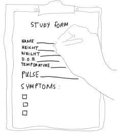
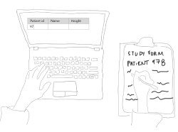

cleaning up messy data
background
Tamr is a company dedicated to helping enterprises do more with their data. Through a mix of machine learning and human collaboration, Tamr makes it easy for companies to do the rote data cleanup tasks that don't require much skill but take up a lot of data scientist's time. Tamr's goal is to allow people to spend their time learning from data and acting on it; not finding it and cleaning it up.
my role
I was the lead designer on a multi-disciplinary team of engineers and data scientists at Tamr. I regularly collaborated with and got feedback from an incredible team of three other deisgners. Over the course of four months, we built a tool for restructuring data.
the challenge
Imagine a researcher at a pharmaceutical company that is evaluating a new treatment.
Patients come in and the researcher notes down their information.
The researcher then enters the results into a table that matches the study form where they took their notes - one row per patient.
The problem is that this row by row format is optimized for data collection; not for data analysis. When data is analyzed, it's better in a "tall and skinny" format, with one row per test per patient.
Our mission was to create a tool that would make it easy for scientists to restructure their data.The first step was to build the toolkit for humans to do the transformations. The second step was to add in machine learning so that the system could learn what common transformations were and then perform them automatically.
the research
I started with a lot of questions: Who would be using the tool? Where, when, and why would they use it?
I sought out the answers through interviews with data scientists, on-site visits to various pharmaceutical companies, and competitive research of tools in the space.
Then I shared what I found with my team: I presented findings to my team. Once we had a shared understanding of what we were building and who we were building it for, we moved on to thinking about the tool itself.
Collaborative journey mapping
sketching
I spent a lot of time diverging, sketching, and getting my head around the problem. I was lucky enough to work with a big team of data scientists who sketched with me, answered questions, and generally helped me start converging on a vision for how the tool would function.
sketching
... and more sketching
prototyping
This kind of complex interaction is best understood functionally, not in static form, so I quickly started prototyping.
so many InVision prototypes
building + iterating
After a few rounds of simple Invision prototypes, the team started to build.
With such a complex operation, it’s hard to really find the holes with the hardcoded experience of an Invision prototype or wireframe walkthrough.
At this stage, I conducted usability testing and shared results with the rest of the team. This revealed (as it always does) all sorts of nuances that we hadn’t considered.
The process continued this way — built, test, iterate.
the result
The tool was adopted by a range of customers, particularly those at life sciences companies. The tool is now in use at a number of life sciences companies. Users report a significant improvement in efficiency and ease of use compared to other data restructuring options.
so many InVision prototypes